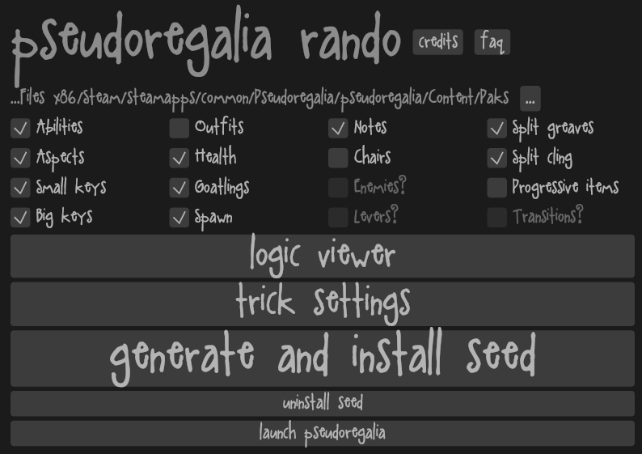
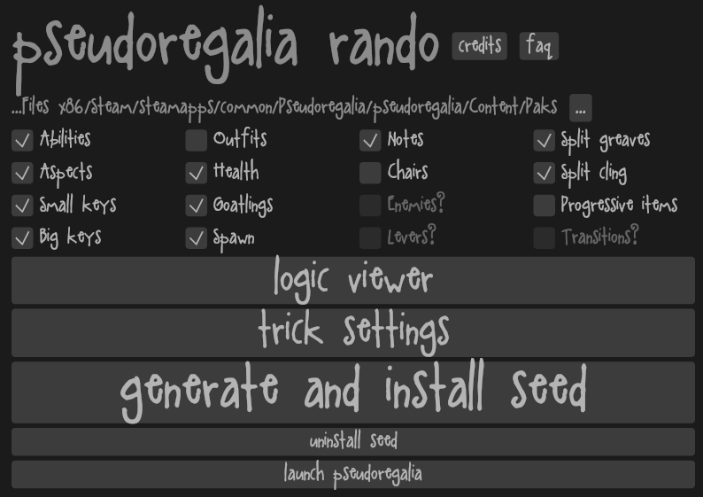

about
the pseudoregalia rando is a game mode for pseudoregalia that enhances replayability by shuffling pickups randomly while ensuring the game is still beatable without glitches
the pseudoregalia rando is a game mode for pseudoregalia that enhances replayability by shuffling pickups randomly while ensuring the game is still beatable without glitches
the pseudoregalia rando is a game mode for pseudoregalia that enhances replayability by shuffling pickups randomly while ensuring the game is still beatable without glitches
the idea for the pseudoregalia rando came because pseudoregalia is a freaking amazing game and it's a metroidvania made in unreal so i could use the base of the blue fire rando
shortly after finishing the blue fire rando i became gleefully obsessed with the wonder 3D metroidvania pseudoregalia - naturally since it was made in unreal and i had the base code i made a randomiser for it. in the process i massively improved the logic code to generate much less predictable seeds (shuffling within each area and freezing progression items made progression appearing early very likely). pseudoregalia was also much easier since everything was an overworld check.